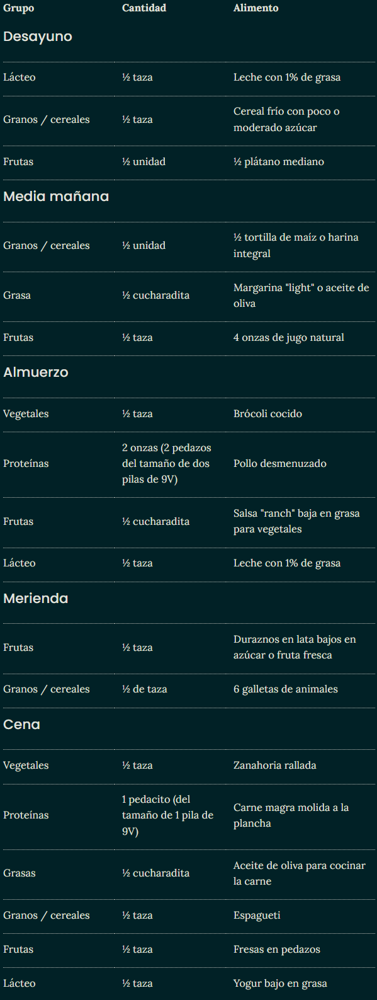

Un niño de esta edad necesita entre 1,000 y 1,200 calorías diariamente (dependiendo de su nivel de actividad), que probablemente será más o menos la mitad de lo que tú comes al día.
Aunque lo veas ya mucho más grande que hace unos meses, las porciones que come al día un niño de entre 2 y 3 años, siguen siendo relativamente pequeñas. Si las comparas, verás que no aumentan mucho con la edad.
Esta es una etapa en la que el ¡No! es su palabra favorita y por eso puedes estar teniendo ciertas batallas en la mesa, por negarse a comer vegetales o bien, por querer comer siempre lo mismo.
Pero, ¡no te desesperes y sigue ofreciéndole alimentos buenos para él! Es un momento en el que, además, hay que vigilar los problemas de obesidad, porque es aquí donde pueden empezar a aparecer.
Alimentos que puedes ofrecerle
Tu hijo ya puede comer de todo, pero anímale a que coma de la forma más saludable posible ya que ahora se están definiendo sus gustos por los alimentos.
Escoge entre las siguientes opciones en cada uno de los grupos de alimentos:
Granos y cereales: tortillas de maíz, arroz blanco o integral, panes, cereales, pasta, fideos, avena, quinoa. Procura servirle granos integrales por lo menos la mitad de las veces.
Vegetales: zanahorias, calabacitas, brócoli, espinaca, lechuga "romana", vegetales verdes, amarillos, rojos. Cualquier vegetal tolerado cocinado o crudo y en pedazos pequeños. Una forma fácil de obtener una gran variedad de nutrientes es eligiendo vegetales de muchos colores diferentes.
Frutas: manzana, pera, melón, sandía, naranja, kiwi, mango, papaya, carambola. Cualquier fruta tolerada fresca o cocida y en pedazos pequeños. Al igual que los vegetales, las frutas de diferentes colores aportan diferentes vitaminas y minerales. Cómpralas frescas, secas, congeladas o enlatadas.
Lácteos: leche de 2 por ciento, 1 por ciento o descremada, yogur, queso natural, queso, helado de leche, pudín. (El queso crema, la crema y la mantequilla no se consideran como parte del grupo de los lácteos por su alto contenido de grasas saturadas y porque no contienen mucho calcio).
Proteínas: carnes magras de res, cerdo, pollo, pescado (no mariscos), huevos. Los frijoles (habas), chícharos (arvejas), lentejas, garbanzos, soya y otras legumbres también se incluyen en el grupo de las proteínas.
Grasas: Si las necesitas para cocinar y preferiblemente grasas saludables como aceites vegetales de oliva o semillas.
Ejemplo de menú diario
